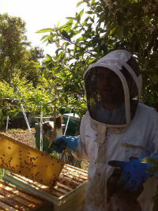

La Miel Natural está recomendada para:
- Antibiotíco Dulce: La miel es un placer para los golosos que te ayuda a mantener alejadas las infecciones. Contiene azúcares energéticos, vitaminas, minerales, enzimas activas, aminoácidos, ácidos orgánicos, sustancias antibióticas.
- Para la tos y suaviza la garganta.
- Alivia alergias.
- Tiene efectos laxantes y es muy eficaz contra el estreñimiento.
- Es un buen antioxidante, gracias a su alto contenido en ácidos fenólicos y enzimas como la catalasa y la glucosa oxidasa que son capaces de proteger a las células de los radicales libres.
- Alimento prebiótico, etc.
|

|